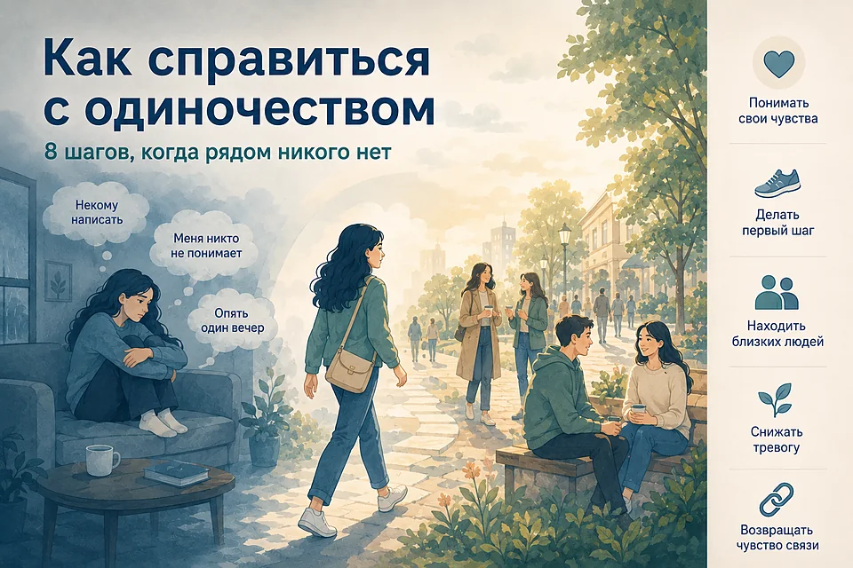
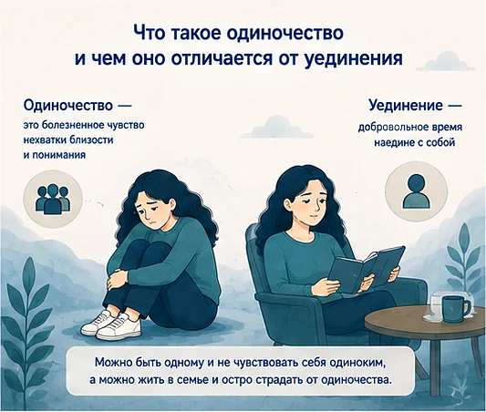
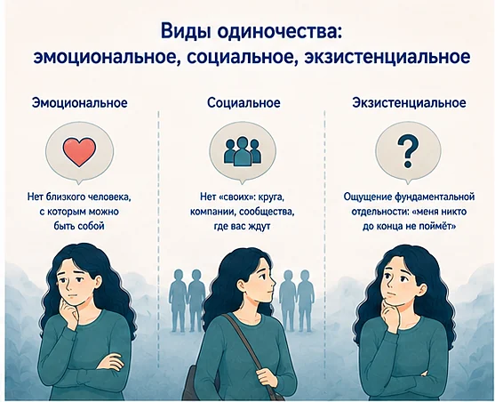
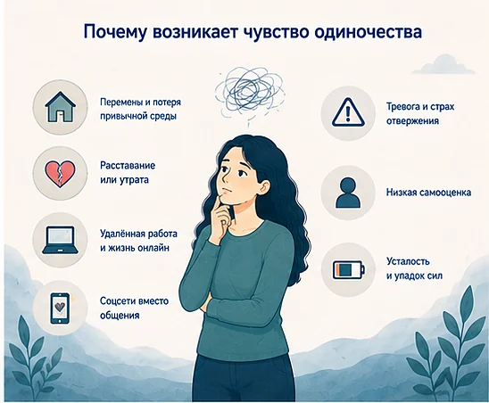
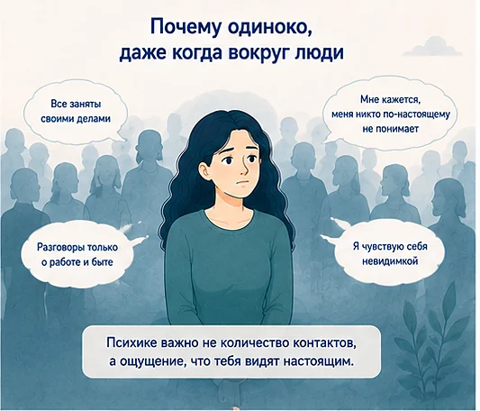
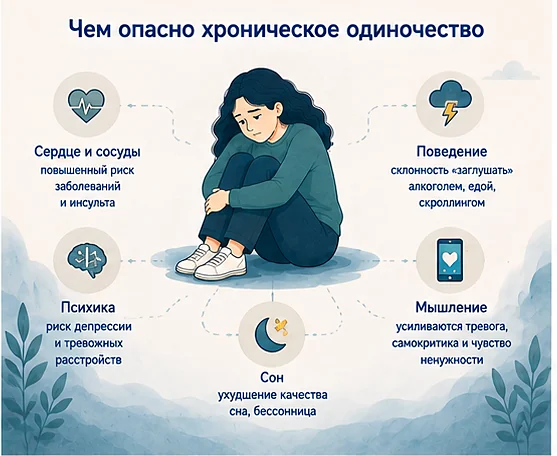
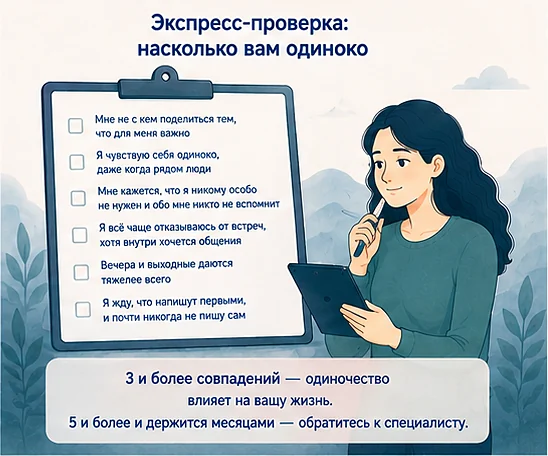
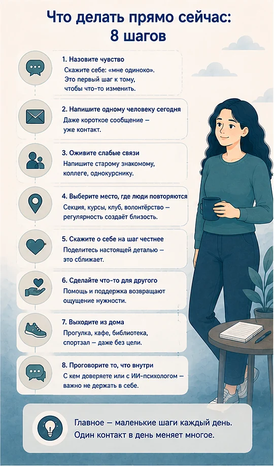
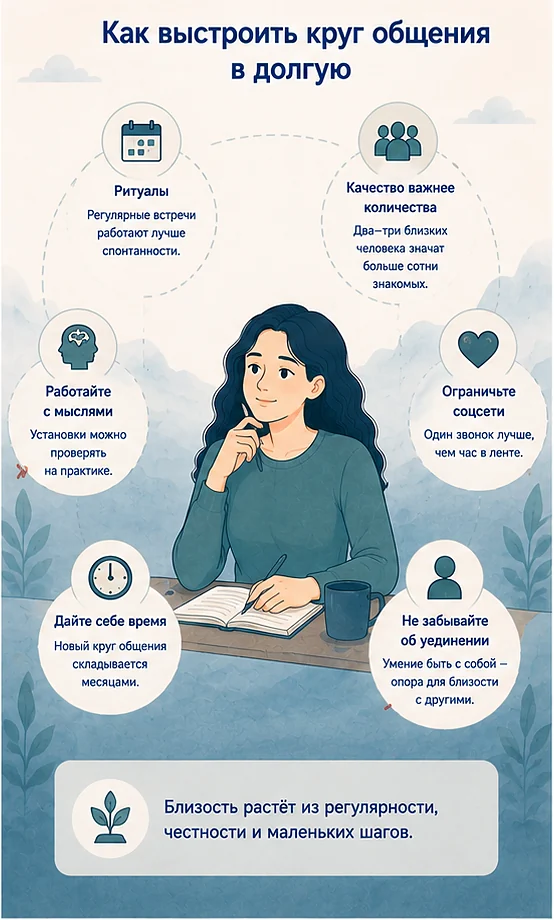
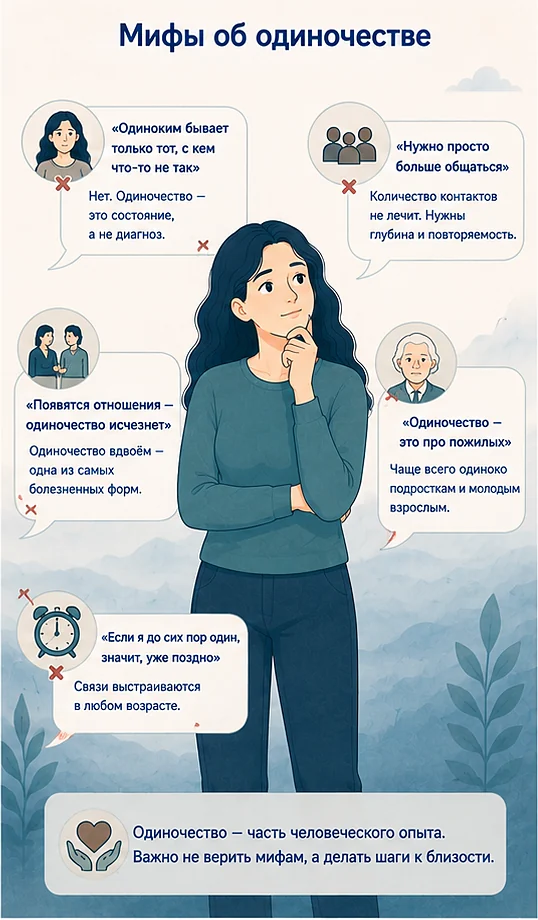

Как справиться с одиночеством: 8 шагов, когда рядом никого нет
Обновлено: 21.08.2026 · 16 минут чтения

Одиночество — это болезненное чувство разрыва между тем общением, которого хочется, и тем, которое есть. Оно возникает не от количества людей вокруг: одиноко бывает и в переполненном офисе, и в браке, и в чате на пятьсот человек. Хорошая новость: одиночество — не черта характера и не приговор, а состояние, которое меняется — если начать с одного маленького контакта, а не с попытки «завести друзей». Ниже — почему возникает чувство одиночества, что делать, если одиноко прямо сейчас, и как перестать чувствовать себя одиноким в долгую.
- Что такое одиночество и чем оно отличается от уединения
- Виды одиночества: эмоциональное, социальное, экзистенциальное
- Почему возникает чувство одиночества
- Почему одиноко, даже когда вокруг люди
- Чем опасно хроническое одиночество
- Экспресс-проверка: насколько вам одиноко
- Как избавиться от одиночества: 8 шагов прямо сейчас
- Упражнение «10 минут против одиночества» и план на неделю
- Как перестать чувствовать себя одиноким в долгую
- Мифы об одиночестве
- Что не помогает при одиночестве
- Ошибки, которые усиливают одиночество
- Когда обратиться к специалисту
- Частые вопросы
Что такое одиночество и чем оно отличается от уединения
Одиночество — это субъективное переживание нехватки близости и понимания. Ключевое слово здесь «субъективное»: одиночество измеряется не числом контактов в телефоне, а тем, насколько вас видят и понимают те, кто рядом. Поэтому человек с сотней знакомых может чувствовать себя опустошённым, а тот, у кого есть один по-настоящему близкий друг, — нет.
Психологи разводят три похожих, но разных состояния — и путать их вредно, потому что «лечатся» они по-разному.
| Состояние | Что это | Как ощущается |
|---|---|---|
| Уединение | Добровольное время наедине с собой | Спокойствие, восстановление сил, «наконец-то тишина» |
| Социальная изоляция | Объективно мало контактов (переезд, болезнь, удалёнка) | Может переживаться и легко, и тяжело — зависит от человека |
| Одиночество | Разрыв между желаемой и реальной близостью | Пустота, тоска, ощущение «меня никто не знает» |

Отсюда практический вывод: если вы много времени одни, но вам хорошо — с вами всё в порядке, чинить нечего. Проблема начинается там, где одиночество ощущается как боль и держится долго.
Виды одиночества: эмоциональное, социальное, экзистенциальное
Одиночество бывает разным, и от его типа зависит, что поможет.
- Эмоциональное одиночество — нет одного близкого человека, с которым можно быть полностью собой. Часто возникает после расставания или потери близкого. Компании и вечеринки его почти не снимают: нужна глубина, а не количество.
- Социальное одиночество — нет «своих»: круга, компании, сообщества, где вас ждут. Типично после переезда, смены работы, окончания учёбы. Здесь как раз помогают регулярные встречи и общие занятия.
- Экзистенциальное одиночество — ощущение фундаментальной отдельности: «меня никто до конца не поймёт». Оно свойственно всем людям и обостряется в кризисы и при потере смысла. Полностью оно не исчезает, но становится заметно менее болезненным благодаря честным разговорам, доверию и опорам, которые дают смысл.

Часто они смешиваются: например, после переезда человек теряет и близкого друга рядом, и всю привычную среду сразу. Полезно спросить себя: чего именно мне не хватает — одного близкого или круга? Ответ подскажет, куда направить силы.
Почему возникает чувство одиночества
Одиночество почти всегда объяснимо. Вот самые частые причины:
- Перемены и потеря привычной среды. Переезд, новая работа, окончание университета, декрет, выход на пенсию — старые связи рвутся сами, новые не появляются автоматически.
- Расставание или утрата. Уходит не просто человек, а тот, кто знал вас в подробностях. Подробно об этом — в статьях «Как пережить расставание и отпустить человека» и «Как пережить смерть близкого человека».
- Удалённая работа и жизнь онлайн. Исчезают случайные живые контакты — короткие разговоры на кухне офиса, по дороге, в перерыве. Именно они создавали фоновое ощущение включённости.
- Соцсети вместо общения. Лента даёт иллюзию присутствия людей и одновременно постоянное сравнение: у всех компании и поездки, а у вас — вечер с телефоном.
- Тревога и страх отвержения. Когда страшно написать первым или показаться навязчивым, человек избегает контактов — и одиночество усиливается. Об этом механизме — в статье про тревогу.
- Низкая самооценка. Установка «я неинтересный, со мной скучно» заставляет заранее отказываться от встреч. Как её менять — в материале про самооценку.
- Усталость и упадок сил. При апатии и выгорании на общение просто не остаётся ресурса — и человек выпадает из круга незаметно для себя.

Заметьте: почти все причины — про обстоятельства и состояние, а не про то, что с вами «что-то не так». Это важное различие, потому что стыд за одиночество мешает сделать первый шаг сильнее, чем сами обстоятельства.
Почему одиноко, даже когда вокруг люди
Самый частый запрос про одиночество звучит так: «У меня есть семья, коллеги, переписки — почему мне так пусто?» Ответ в том, что психике нужны не контакты, а эмоциональная близость и ощущение, что тебя видят настоящим. Если всё общение держится на бытовых и рабочих темах, а внутренняя жизнь остаётся неразделённой, чувство одиночества сохраняется при любом количестве людей вокруг.
Одиночество в отношениях и в браке
Одиночество вдвоём — отдельная и очень болезненная форма. Люди живут рядом, но разговоры сводятся к логистике: кто заберёт ребёнка, что купить, что с деньгами. Эмоциональная близость и доверие исчезают незаметно, и рядом с партнёром становится одиноко сильнее, чем в пустой квартире. Здесь помогает не «терпеть», а вернуть в отношения разговор о чувствах, а не только о делах. Отдельный случай — когда рядом с партнёром одиноко потому, что вас обесценивают, контролируют или наказывают молчанием: это уже про токсичные отношения, и разговором по душам такое не лечится.
Одиночество в толпе и на работе
В большом городе и в шумном коллективе одиночество часто обостряется: вокруг много людей, и от этого сильнее контраст с собственной изоляцией. Плюс включается сравнение — кажется, что у всех остальных есть «свои» — друзья, близкие люди, компании, — а у вас нет. На самом деле, по данным Всемирной организации здравоохранения (ВОЗ), одиночество испытывает каждый шестой человек в мире — многие люди вокруг вас, скорее всего, чувствуют похожее.
Ключевой механизм здесь — замкнутый круг одиночества: чем дольше человек один, тем настороженнее он воспринимает людей, тем чаще ждёт отказа и тем реже делает шаг навстречу. Разорвать этот круг можно только небольшим действием — таким маленьким, чтобы страх не успел его остановить.

Чем опасно хроническое одиночество
Короткие периоды одиночества переживает каждый — это нормальная часть жизни. Опасно другое: когда состояние становится хроническим и длится месяцами.
По данным Всемирной организации здравоохранения (ВОЗ), одиночество испытывает около 16% населения планеты — примерно каждый шестой человек, — и оно связано примерно с 870 000 смертей ежегодно. Вопреки стереотипу, чаще всего одиночество встречается не у пожилых, а у подростков и молодых взрослых.
На что влияет длительное одиночество:
- Сердце и сосуды. Хроническое одиночество связано с повышенным риском сердечно-сосудистых заболеваний и инсульта.
- Психика. Растёт риск депрессии и тревожных расстройств; усиливаются навязчивые мысли и самокритика.
- Сон. Одиночество ухудшает качество сна — мозг в изоляции хуже расслабляется. Что с этим делать — в статье про бессонницу.
- Поведение. Появляется склонность «заглушать» вечера алкоголем, едой или бесконечным скроллингом.
- Мышление. Усиливаются тревога, самокритика и чувство ненужности — а вместе с ними и убеждение «я никому не интересен», которое мешает сделать шаг навстречу.

Это не повод пугаться, а повод отнестись к чувству серьёзно. Одиночество — такой же сигнал потребности, как голод или жажда: оно не значит, что вы сломаны, оно значит, что вам нужны люди.
Экспресс-проверка: насколько вам одиноко
Отметьте, сколько утверждений описывают вас за последний месяц:
- мне не с кем поделиться тем, что для меня по-настоящему важно;
- я чувствую себя одиноко, даже когда рядом люди;
- мне кажется, что я никому особо не нужен и обо мне никто не вспомнит;
- я всё чаще отказываюсь от встреч, хотя внутри хочется общения;
- вечера и выходные даются тяжелее всего;
- я жду, что напишут первыми, и почти никогда не пишу сам.

Три и больше совпадений — одиночество уже влияет на вашу жизнь, и шаги ниже помогут. Пять и больше, и держится месяцами — стоит не только пробовать самостоятельные шаги, но и обратиться к специалисту. Это не диагноз, а способ отнестись к себе внимательнее.
Как избавиться от одиночества: 8 шагов, что делать прямо сейчас
Главный принцип: начинать с малого и с регулярности, а не с большой цели «найти друзей». Одиночество отступает не от одного удачного вечера, а от накопленных маленьких контактов.
- Назовите чувство своим именем. Скажите себе прямо: «мне одиноко». Не «со мной что-то не так», а «мне не хватает близости». Это снимает стыд и переводит состояние из приговора в задачу, которую можно решать.
- Напишите одному человеку сегодня. Не «начать общаться со всеми», а одно сообщение одному конкретному человеку. Достаточно двух строк: «Привет, вспомнил про тебя. Как ты?» Ответ важен меньше, чем сам шаг.
- Оживите слабые связи. Бывший однокурсник, коллега из прошлой команды, сосед, дальний родственник. Такие «неблизкие» контакты восстанавливаются легче всего и часто дают самое быстрое облегчение.
- Выберите место, где люди повторяются. Секция, курсы, хор, настолки, бег, волонтёрство, религиозная община — что угодно с расписанием. Близость рождается из регулярности встреч, а не из харизмы: чтобы человек стал знакомым, обычно нужно увидеться с ним несколько раз.
- Скажите о себе на шаг честнее. В следующем разговоре добавьте одну настоящую деталь вместо «нормально»: «неделя тяжёлая, вымотался». Глубина начинается с маленькой откровенности — и почти всегда вызывает ответную.
- Сделайте что-то для другого. Помощь соседу, волонтёрство, поддержка того, кому тоже тяжело. Это возвращает ощущение нужности быстрее, чем попытки «получить» общение, — и заодно выводит из дома.
- Выходите из дома, даже без цели пообщаться. Кофейня, парк, библиотека, спортзал. Фоновое присутствие людей и движение снижают остроту одиночества, даже если вы ни с кем не заговорите.
- Проговорите то, что внутри. Одиночество усиливается, когда чувства некому назвать вслух. Поделитесь с тем, кому доверяете, или проговорите это с ИИ-психологом — анонимно и в любое время, особенно когда рядом действительно никого нет.

Упражнение «10 минут против одиночества»
Это самая короткая рабочая версия всего, что написано выше. Задача — не изменить жизнь, а каждый день делать один шаг навстречу людям, который занимает меньше десяти минут. Отметьте то, что сделаете сегодня:
- написать одному человеку — два предложения, без повода;
- выйти на короткую прогулку, желательно там, где есть люди;
- сказать «спасибо» продавцу, бариста или соседу — вслух, глядя в глаза;
- позвонить родителям или тому, кто давно не слышал ваш голос;
- найти одно занятие с расписанием и записаться (или хотя бы открыть сайт);
- ответить в чате по интересам, где вы обычно только читаете.
Пять из шести пунктов не требуют смелости — только решения начать. И именно они постепенно возвращают ощущение принадлежности.
Если хочется структуры, вот как это разложить на неделю. План намеренно лёгкий: перегруз здесь работает против вас.
| День | Шаг | Зачем |
|---|---|---|
| 1 | Написать одному человеку из прошлого | Оживить слабую связь — самый лёгкий вход |
| 2 | Выйти из дома без цели общаться | Снять остроту изоляции без риска отвержения |
| 3 | Найти занятие с расписанием и записаться | Обеспечить регулярные встречи с одними и теми же людьми |
| 4 | Сказать о себе честнее в любом разговоре | Первый шаг к эмоциональной близости |
| 5 | Сделать что-то для другого человека | Вернуть ощущение нужности |
| 6 | Заменить час ленты живым делом | Освободить время и внимание для контакта |
| 7 | Подвести итог: что было легче, чем казалось | Собрать доказательства против «у меня не получится» |
Если самое трудное — начать разговор, начните с того, где нет риска отвержения. ИИ-психолог выслушает, поможет разобраться, какого именно общения вам не хватает, и вместе с вами составит небольшой план возвращения в контакт с людьми. Анонимно, без осуждения и без записи.
Как перестать чувствовать себя одиноким: круг общения в долгую
Быстрые шаги снимают остроту, но чтобы побороть одиночество насовсем, нужен устойчивый круг общения и настоящие социальные связи. Это делается месяцами и складывается из простых опор:
- Ритуалы вместо спонтанности. Регулярные встречи, которые не нужно каждый раз организовывать заново: созвон с другом по воскресеньям, тренировка по вторникам, ужин раз в месяц. Спонтанность в занятой взрослой жизни почти не работает.
- Качество важнее количества. Цель — не «много друзей», а два-три человека, с которыми можно быть настоящим. Это то, что реально закрывает эмоциональное одиночество.
- Работайте с мыслями, а не только с расписанием. «Я неинтересный», «я всем помешаю», «меня не позовут» — это не факты, а установки, и их можно проверять на практике. Основа — отношение к себе.
- Ограничьте соцсети как замену общения. Лента даёт видимость контакта и отнимает время, которое могло уйти на живую встречу. Полезнее один звонок, чем час прокрутки.
- Дайте себе время. Новый круг общения складывается за месяцы, а не за неделю. Отсутствие мгновенного результата — не доказательство, что «у меня не получится».
- Не отказывайтесь от уединения. Умение быть с собой в удовольствие — не противоположность общению, а его опора: тогда вы идёте к людям из интереса, а не из страха пустоты.

Мифы об одиночестве
Вокруг одиночества много установок, которые только загоняют глубже. Разберём главные:
- «Одиноким бывает только тот, с кем что-то не так». Нет. Одиночество испытывает каждый шестой человек в мире, включая успешных, общительных и находящихся в отношениях. Это состояние, а не диагноз личности.
- «Нужно просто больше общаться». Количество контактов само по себе не помогает: можно ходить на вечеринки каждую неделю и оставаться одиноким. Работает глубина и повторяемость, а не объём.
- «Появятся отношения — одиночество исчезнет». Одиночество вдвоём — одна из самых болезненных его форм. Партнёр не заменяет ни круга общения, ни отношений с самим собой.
- «Одиночество — это про пожилых». По данным ВОЗ, чаще всего одиноко именно подросткам и молодым взрослым. Возраст здесь не главный фактор.
- «Если я до сих пор один, значит, уже поздно». Связи выстраиваются в любом возрасте, и почти всегда через одни и те же механизмы: регулярные встречи и постепенная откровенность.

Что не помогает при одиночестве
Прежде чем разбирать, что делать, полезно вычеркнуть то, что кажется решением, но им не является. Вот способы, которые дают короткое облегчение и оставляют одиночество на месте:
- Бесконечный скроллинг. Лента создаёт ощущение присутствия людей, но не даёт ни близости, ни отклика — и обычно усиливает сравнение себя с чужими компаниями и поездками.
- Алкоголь по вечерам. Он приглушает тоску на пару часов и ухудшает сон, настроение и мотивацию на следующий день — а значит, делает шаг навстречу людям ещё труднее.
- Ждать, пока напишут первыми. Ожидание сообщения — не действие. Обе стороны часто ждут одинаково, и молчание тянется месяцами.
- Случайные знакомства «лишь бы не одному». Разовые встречи и переписки без продолжения не создают социальных связей: близость строится на повторяемости, а не на количестве новых лиц.
- Полное погружение в работу. Занятость отлично маскирует одиночество и одновременно съедает время, из которого могли бы вырасти отношения. Часто это прямая дорога к выгоранию.
- Ждать «своего человека», который всё решит. Один человек не может закрыть потребность и в близости, и в круге общения, и в поддержке. Ставка на одного — это ещё и большая нагрузка на него.
Общее у всех этих способов одно: они снижают боль, но не создают контакта. Работает противоположное — маленькие, но регулярные шаги к людям.
Ошибки, которые усиливают одиночество
Иногда мы сами, того не желая, делаем изоляцию глубже. Самые частые ловушки:
- Читать отказ как приговор. «Не смог сегодня» означает «не смог сегодня», а не «ты никому не нужен». Одиночество делает нас склонными к самому мрачному толкованию.
- Ставить слишком большую цель. «Найти близких друзей» парализует. «Написать одному человеку» — выполнимо сегодня.
- Считать, что первым писать неловко. Люди почти всегда рады неожиданному сообщению и почти никогда не считают его навязчивостью. Эту установку проще всего проверить на практике.
- Изолироваться после боли. После расставания или предательства хочется закрыться. Защита понятна, но затянувшаяся изоляция усиливает именно то, от чего вы прячетесь.
- Обесценивать своё состояние. «У других хуже, мне грех жаловаться» — способ не заниматься проблемой. Одиночество заслуживает внимания само по себе.
Когда обратиться к специалисту
Ситуативное одиночество после перемен — нормальная реакция, которая проходит по мере того, как складывается новая жизнь. Но есть сигналы, при которых стоит обратиться к психологу или врачу:
- одиночество держится месяцами и не меняется, что бы вы ни делали;
- вы избегаете людей из-за страха оценки, хотя общения хочется;
- добавились подавленность, апатия, нарушения сна, потеря интереса к жизни;
- вы всё чаще заглушаете вечера алкоголем или другими способами «отключиться»;
- появляется ощущение, что жизнь бессмысленна, или мысли о том, что не хочется жить.
Во многих случаях психотерапия помогает уменьшить чувство одиночества и разобраться с его причинами: значительная часть работы — не «где искать людей», а с установками, страхом отвержения, социальной тревогой и навыками сближения. Обратиться за помощью — не признание поражения, а способ выбраться быстрее.
Частые вопросы
Почему мне одиноко, даже когда рядом люди?
Одиночество зависит не от количества контактов, а от их глубины. Если в общении не получается быть собой и говорить о важном, психика воспринимает такие связи как поверхностные — и чувство одиночества остаётся даже в компании или в отношениях. Помогает не увеличивать число знакомств, а сделать одну–две связи честнее: сказать вслух о том, что вы на самом деле чувствуете.
Одиночество и уединение — это одно и то же?
Нет. Уединение — это добровольное состояние, когда вы наедине с собой и вам от этого хорошо: оно восстанавливает силы. Одиночество — это болезненный разрыв между тем общением, которое хочется, и тем, которое есть на самом деле. Можно быть одному и не чувствовать себя одиноким, а можно жить в семье и остро страдать от одиночества.
Как справиться с одиночеством, если совсем нет друзей?
Начните не с поиска друзей, а с регулярности: выберите одно занятие, где люди встречаются постоянно — курсы, спортивная секция, волонтёрство, клуб по интересам. Близость почти всегда вырастает из повторяющихся встреч, а не из одного удачного знакомства. Параллельно оживите слабые связи: короткое сообщение старому знакомому работает лучше, чем поиск новых людей с нуля.
Чем опасно хроническое одиночество?
По данным Всемирной организации здравоохранения, одиночество испытывает примерно каждый шестой человек в мире, и оно связано примерно с 870 тысячами смертей ежегодно. Длительное одиночество повышает риск сердечно-сосудистых заболеваний, депрессии, тревожных расстройств и нарушений сна. Это не значит, что с вами что-то не так: это значит, что связь с людьми — такая же базовая потребность, как сон и еда.
Сколько длится чувство одиночества после переезда или расставания?
Ситуативное одиночество после переезда, расставания или смены работы обычно ослабевает за несколько месяцев, пока выстраивается новый круг общения. Первые недели самые тяжёлые — это нормальная реакция на потерю привычных связей, а не признак слабости. Если спустя полгода становится только тяжелее и пропадает желание общаться вообще, стоит обратиться к специалисту.
Что делать, если одиночество накрывает по вечерам?
Вечером спадает нагрузка и дневные дела перестают отвлекать, поэтому чувство одиночества обостряется именно тогда. Помогает заранее продуманный вечерний ритуал: короткая прогулка, звонок близкому, занятие руками — вместо бесконечной ленты в телефоне. Если вечера регулярно даются тяжело, запланируйте на них одно живое дело в неделю: секцию, встречу или курс.
Нормально ли быть одному и не хотеть общения?
Да, если вам от этого хорошо. Потребность в общении у всех разная: интроверту достаточно одного–двух близких людей, и это не признак проблемы. Тревожный сигнал другой — когда общения хочется, но вы его избегаете, или когда одиночество ощущается как тяжесть и пустота. Ориентируйтесь не на чужую норму, а на то, приносит ли ваше состояние страдание.
Почему вечером одиночество ощущается сильнее?
Вечером заканчиваются дела и внешние стимулы, которые весь день отвлекали, и остаётся тишина — на её фоне чувства слышны громче. Дополнительно играет роль усталость: к концу дня меньше ресурса, чтобы справляться с тяжёлыми мыслями. Поэтому вечернее обострение одиночества — это не ухудшение состояния, а закономерность, и её можно предусмотреть заранее.
Можно ли привыкнуть к одиночеству?
К образу жизни в одиночку привыкнуть можно, и многие живут так вполне благополучно. Но к самому чувству одиночества привыкания не происходит: если потребность в близости не закрыта, боль никуда не уходит, а человек просто перестаёт её замечать и постепенно сужает круг общения. Поэтому «смириться» — не решение: лучше маленькими шагами восстанавливать контакт с людьми.
Почему после расставания так одиноко?
После расставания уходит не просто человек, а тот, кто знал вас в подробностях и был рядом каждый день. Одновременно рушится привычный распорядок, общие планы и часто часть общих друзей — то есть теряется сразу и близость, и круг общения. Это ощущается острее обычного одиночества и постепенно слабеет по мере того, как выстраивается новая повседневность.
Читать также
- Как пережить расставание и отпустить человека: 8 шагов — если одиночество началось после разрыва.
- Как повысить самооценку: 8 шагов, которые реально работают — если мешает установка «со мной скучно, я никому не интересен».
- Апатия: почему нет сил и ничего не хочется — и что делать — когда на общение просто не остаётся сил.
- Как справиться с тревогой: 8 техник, которые реально помогают — если сделать первый шаг мешает страх оценки.
- Токсичные отношения: 12 признаков и как из них выйти — если одиноко именно рядом с партнёром, а круг общения незаметно сузился.
- Как пережить смерть близкого человека: 9 шагов, которые помогают — если одиночество появилось после утраты близкого.
- Как поддержать человека в горе: что говорить и чего не говорить — если одиноко не вам, а тому, кого вы хотите поддержать.
Может ли одиночество быть связано с чертами характера?
Отчасти. Потребность в общении устойчиво различается у разных людей, и низкая экстраверсия означает лишь то, что вам нужно меньше контактов, а не то, что вы обречены на одиночество. Ловушка в другом: одиночество ощущается тяжело, когда общения меньше, чем хочется именно вам, — а сравнение с чужой нормой только сбивает ориентир. Отмерять стоит по себе.
Материал подготовлен командой AI Therapist и основан на доказательных подходах к работе с одиночеством и социальной тревогой — когнитивно-поведенческой терапии (КПТ), поведенческой активации и практиках осознанности (Mindfulness). Статья носит просветительский характер и не заменяет консультацию специалиста.
Источники: Всемирная организация здравоохранения — Social isolation and loneliness, NHS Every Mind Matters — Loneliness.
Кто отвечает за содержание сайта и по каким правилам мы готовим материалы — на странице о проекте.